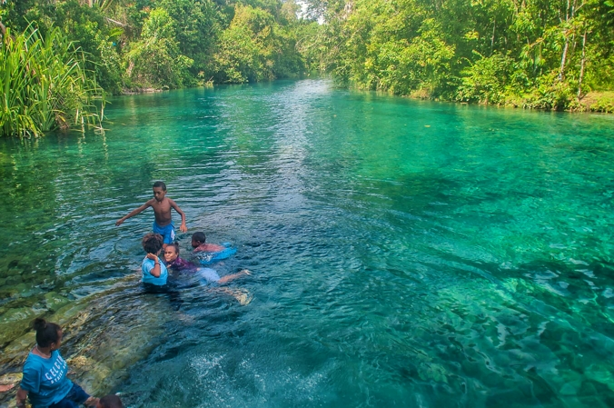

Tugas Ke-4
Nama Lengkap : Desy Puspita Nigrum
NIM : 202055202072

Deskripsi :
Kabupten Sorong Selatan dengan ibukota teminabuan adalah salah satu kabupaten pemekaran yang cukup berkembang di area kepala burung Propinsi Papua barat. Kota teminanabuan bisa dijangkau dari kota Sorong dengan menggunakan jalan darat dengan waktu tempuh sekitar 3-4 jam.
Seperti judul tulisan di atas, kali Semra adalah salah satu dari sekian banyak kali yang mengaliri daerah dataran teminabuan. Kali Semra ini sekarang sudah menjadi salah satu alternatif tempat wisata warga masyarakat kota/kabupaten Sorong, walaupun jaraknya cukup jauh dari Sorong, namun kejernihan dan sejuknya kali Semra akan menghapus semua kelelahan karena perjalanan panjang.